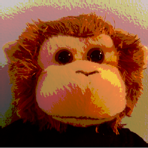

SkiaSharp color filters
Color filters can translate colors in a bitmap (or other image) to other colors for effects such as posterization:

To use a color filter, set the ColorFilter property of SKPaint to an object of type SKColorFilter created by one of the static methods in that class. This article demonstrates:
- a color transform created with the
CreateColorMatrixmethod. - a color table created with the
CreateTablemethod.
The color transform
The color transform involves using a matrix to modify colors. Like most 2D graphics systems, SkiaSharp uses matrices mostly for transforming coordinate points as iscussed in the article Matrix Transforms in SkiaSharp. The SKColorFilter also supports matrix transforms, but the matrix transforms RGB colors. Some familiarity with matrix concepts is necessary to understand these color transforms.
The color-transform matrix has a dimension of four rows and five columns:
| M11 M12 M13 M14 M15 | | M21 M22 M23 M24 M25 | | M31 M32 M33 M34 M35 | | M41 M42 M43 M44 M45 |
It transforms a RGB source color (R, G, B, A) to the destination color (R', G', B', A').
In preparation for the matrix multiplication, the source color is converted to a 5×1 matrix:
| R | | G | | B | | A | | 1 |
These R, G, B, and A values are the original bytes ranging from 0 to 255. They are not normalized to floating point values in the range 0 to 1.
The extra cell is required for a translation factor. This is analogous to the use of a 3×3 matrix to transform two-dimensional coordinate points as described in the section The Reason for the 3-by-3 Matrix in the article on using matrices for transforming coordinate points.
The 4×5 matrix is multiplied by the 5×1 matrix, and the product is a 4×1 matrix with the transformed color:
| M11 M12 M13 M14 M15 | | R | | R' |
| M21 M22 M23 M24 M25 | | G | | G' |
| M31 M32 M33 M34 M35 | × | B | = | B' |
| M41 M42 M43 M44 M45 | | A | | A' |
| 1 |
Here are the separate formulas for R', G', B', and A':
R' = M11·R + M12·G + M13·B + M14·A + M15
G' = M21·R + M22·G + M23·B + M24·A + M25
B' = M31·R + M32·G + M33·B + M34·A + M35
A' = M41·R + M42·G + M43·B + M44·A + M45
Most of the matrix consists of multiplicative factors that are generally in the range of 0 to 2. However, the last column (M15 through M45) contains values that are added in the formulas. These values generally range from 0 to 255. The results are clamped between the values of 0 and 255.
The identity matrix is:
| 1 0 0 0 0 | | 0 1 0 0 0 | | 0 0 1 0 0 | | 0 0 0 1 0 |
This causes no change to the colors. The transform formulas are:
R' = R
G' = G
B' = B
A' = A
The M44 cell is very important because it preserves opacity. It is generally the case that M41, M42, and M43 are all zero, because you probably don't want opacity to be based on the red, green, and blue values. But if M44 is zero, then A' will be zero, and nothing will be visible.
One of the most common uses of the color matrix is to convert a color bitmap to a gray-scale bitmap. This involves a formula for a weighted average of the red, green, and blue values. For video displays using the sRGB ("standard red green blue") color space, this formula is:
gray-shade = 0.2126·R + 0.7152·G + 0.0722·B
To convert a color bitmap to a gray-scale bitmap, the R', G', and B' results must all equal that same value. The matrix is:
| 0.21 0.72 0.07 0 0 | | 0.21 0.72 0.07 0 0 | | 0.21 0.72 0.07 0 0 | | 0 0 0 1 0 |
There is no SkiaSharp data type that corresponds to this matrix. Instead you must represent the matrix as an array of 20 float values in row order: first row, then second row, and so forth.
The static SKColorFilter.CreateColorMatrix method has the following syntax:
public static SKColorFilter CreateColorMatrix (float[] matrix);
where matrix is an array of the 20 float values. When creating the array in C#, it is easy to format the numbers so they resemble the 4×5 matrix. This is demonstrated in the Gray-Scale Matrix page in the sample:
public class GrayScaleMatrixPage : ContentPage
{
SKBitmap bitmap = BitmapExtensions.LoadBitmapResource(
typeof(CenteredTilesPage),
"SkiaSharpFormsDemos.Media.Banana.jpg");
public GrayScaleMatrixPage()
{
Title = "Gray-Scale Matrix";
SKCanvasView canvasView = new SKCanvasView();
canvasView.PaintSurface += OnCanvasViewPaintSurface;
Content = canvasView;
}
void OnCanvasViewPaintSurface(object sender, SKPaintSurfaceEventArgs args)
{
SKImageInfo info = args.Info;
SKSurface surface = args.Surface;
SKCanvas canvas = surface.Canvas;
canvas.Clear();
using (SKPaint paint = new SKPaint())
{
paint.ColorFilter =
SKColorFilter.CreateColorMatrix(new float[]
{
0.21f, 0.72f, 0.07f, 0, 0,
0.21f, 0.72f, 0.07f, 0, 0,
0.21f, 0.72f, 0.07f, 0, 0,
0, 0, 0, 1, 0
});
canvas.DrawBitmap(bitmap, info.Rect, BitmapStretch.Uniform, paint: paint);
}
}
}
The DrawBitmap method used in this code is from the BitmapExtension.cs file included with the sample.
Here's the result running on iOS, Android, and Universal Windows Platform:
{kind=link}
Watch out for the value in the fourth row and fourth column. That's the crucial factor that is multiplied by the A value of the original color for the A' value of the transformed color. If that cell is zero, nothing will be displayed and the problem might be difficult to locate.
When experimenting with color matrices, you can treat the transform either from the perspective of the source or the perspective of the destination. How should the red pixel of the source contribute to the red, green, and blue pixels of the destination? That's determined by the values in the first column of the matrix. Alternatively, how should the destination red pixel be affected by the red, green, and blue pixels of the source? That's determined by the first row of the matrix.
For some ideas on how to use color transforms, see the Recoloring Images pages. The discussion concerns Windows Forms, and the matrix is a different format, but the concepts are the same.
The Pastel Matrix calculates the destination red pixel by attenuating the source red pixel and slightly emphasizing the red and green pixels. This process occurs similarly for the green and blue pixels:
public class PastelMatrixPage : ContentPage
{
SKBitmap bitmap = BitmapExtensions.LoadBitmapResource(
typeof(PastelMatrixPage),
"SkiaSharpFormsDemos.Media.MountainClimbers.jpg");
public PastelMatrixPage()
{
Title = "Pastel Matrix";
SKCanvasView canvasView = new SKCanvasView();
canvasView.PaintSurface += OnCanvasViewPaintSurface;
Content = canvasView;
}
void OnCanvasViewPaintSurface(object sender, SKPaintSurfaceEventArgs args)
{
SKImageInfo info = args.Info;
SKSurface surface = args.Surface;
SKCanvas canvas = surface.Canvas;
canvas.Clear();
using (SKPaint paint = new SKPaint())
{
paint.ColorFilter =
SKColorFilter.CreateColorMatrix(new float[]
{
0.75f, 0.25f, 0.25f, 0, 0,
0.25f, 0.75f, 0.25f, 0, 0,
0.25f, 0.25f, 0.75f, 0, 0,
0, 0, 0, 1, 0
});
canvas.DrawBitmap(bitmap, info.Rect, BitmapStretch.Uniform, paint: paint);
}
}
}
The result is to mute the intensity of the colors as you can see here:
{kind=link}
Color tables
The static SKColorFilter.CreateTable method comes in two versions:
public static SKColorFilter CreateTable (byte[] table);
public static SKColorFilter CreateTable (byte[] tableA, byte[] tableR, byte[] tableG, byte[] tableB);
The arrays always contain 256 entries. In the CreateTable method with one table, the same table is used for the red, green, and blue components. It's a simple look-up table: If the source color is (R, G, B), and the destination color is (R', B', G'), then the destination components are obtained by indexing table with the source components:
R' = table[R]
G' = table[G]
B' = table[B]
In the second method, each of four color components can have a separate color table, or the same color tables might be shared among two or more components.
If you want to set one of the arguments to the second CreateTable method to a color table that contains the values 0 through 255 in sequence, you can use null instead. Very often the CreateTable call has a null first argument for the alpha channel.
In the section on Posterization in the article on Accessing SkiaSharp bitmap pixel bits, you saw how to modify the individual pixel bits of a bitmap to reduce its color resolution. This is a technique called posterization.
You can also posterize a bitmap with a color table. The constructor of the Posterize Table page creates a color table that maps its index to a byte with the bottom 6 bits set to zero:
public class PosterizeTablePage : ContentPage
{
SKBitmap bitmap = BitmapExtensions.LoadBitmapResource(
typeof(PosterizeTablePage),
"SkiaSharpFormsDemos.Media.MonkeyFace.png");
byte[] colorTable = new byte[256];
public PosterizeTablePage()
{
Title = "Posterize Table";
// Create color table
for (int i = 0; i < 256; i++)
{
colorTable[i] = (byte)(0xC0 & i);
}
SKCanvasView canvasView = new SKCanvasView();
canvasView.PaintSurface += OnCanvasViewPaintSurface;
Content = canvasView;
}
void OnCanvasViewPaintSurface(object sender, SKPaintSurfaceEventArgs args)
{
SKImageInfo info = args.Info;
SKSurface surface = args.Surface;
SKCanvas canvas = surface.Canvas;
canvas.Clear();
using (SKPaint paint = new SKPaint())
{
paint.ColorFilter =
SKColorFilter.CreateTable(null, null, colorTable, colorTable);
canvas.DrawBitmap(bitmap, info.Rect, BitmapStretch.Uniform, paint: paint);
}
}
}
The program chooses to use this color table only for the green and blue channels. The red channel continues to have full resolution:
{kind=link}
You can use various color tables for the different color channels for various effects.